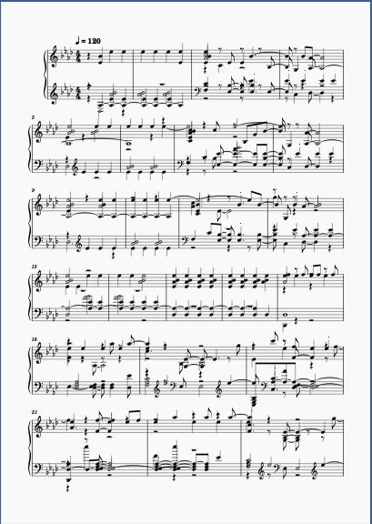

Week 10: Audio Similarity and Transcription
Task 1 - Generating an Audio Similarity Matrix
For this task, I've decided to re-use the tracks I used for last weeks task as they relate to my portfolio theme.
Alongside these tracks, I've also used the tracks given within the collection folder allocated for this week. Tracks 0-3 are Classical tracks, tracks 4-6 are Rock tracks
and tracks 7-9 are my own tracks, all of which fall under the Dance genre. For context with my tracks, Track 7 is Virtual Self - Duvet, Track 8 is Virtual Self - Tremor and track 9 is Aftershock & LCXPR - Party Like A Rockstar.
As the Matrix suggests, Tracks 0-3 are very different to tracks 7-9, however tracks 4-6 show
a little bit of similarity between both classical music and dance music - particularly with track 7 being the Virtual Self - Duvet track.
The plot graph tells a little more of a clear cut story of similarities (or lack of thereof) with my tracks in comparison to the Classical and Rock tracks given in relation to notes. However, this graph is only based one the occurence of C's and A's
Task - Transcription of Porter Robinson - Language
Original Version
 |
 |
Recreated Version
|  |
Analysis
The first thing I noticed when it was automatically transcribed through Sonic Visualiser is that it sounded entirely different when imported to MuseScore. Notably, the key was different. However, the sound of the song was definitely still there despite sounding different - I would go as far as saying that it sounds like a whole new rendition of the original song, despite the sheet music looking messy. Secondly, despite the sound similarity, as mentioned before, the sheet music was messy as the composition of notes was completely off in comparison to the orignal. Thirdly, the tempo and the time signatures were the same - 120bpm and 4/4 respectively. From this task, I would say that automated transcription is not recommended without human supervision if you want a 100% replicated product. However, I did like how similar the track sounded compared to the orignal version.